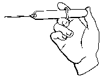
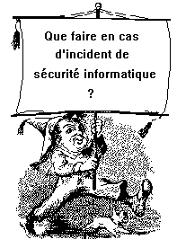
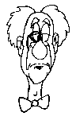

Abolition du temps, de l'espace
et des inégalités sociales, accès immédiat aux
connaissances les plus diverses, le réseau Internet révolutionne
notre vie quotidienne. En accélérant notre entrée dans
le XXIème siècle par l'ouverture d'immenses champs de liberté,
il rencontre un vif succès qu'amplifie son association aux dernières
technologies de communication. Ouvert, peu coûteux, libre et anonyme,
le phénomène semble échapper a priori à l'application
de toute réglementation et la crainte qu'il suscite l'emporte parfois
sur la fascination qu'il exerce car, tel Janus, il présente aussi
une face obscure. Ce n'est pas tant le support qu'il constitue qui est mis
en cause que l'usage imprévisible qu'en fait l'homme qui a transformé
ses multiples atouts en autant de risques.
Abolition du temps, de l'espace
et des inégalités sociales, accès immédiat aux
connaissances les plus diverses, le réseau Internet révolutionne
notre vie quotidienne. En accélérant notre entrée dans
le XXIème siècle par l'ouverture d'immenses champs de liberté,
il rencontre un vif succès qu'amplifie son association aux dernières
technologies de communication. Ouvert, peu coûteux, libre et anonyme,
le phénomène semble échapper a priori à l'application
de toute réglementation et la crainte qu'il suscite l'emporte parfois
sur la fascination qu'il exerce car, tel Janus, il présente aussi
une face obscure. Ce n'est pas tant le support qu'il constitue qui est mis
en cause que l'usage imprévisible qu'en fait l'homme qui a transformé
ses multiples atouts en autant de risques.
La protection des auteurs contre la contrefaÁon ne bénéficie
pas d'un régime particulier puisque le code de la propriété
intellectuelle conÁu à l'époque du papier, s'applique
aussi aux úuvres transitant par l'Internet. C'est d'ailleurs ce qu'ont
rappelé les spécialistes de la question à l'occasion
de la récente médiatisation de 1'affaire du livre Le grand
secret diffusé sur l'Internet en dépit de son interdiction.
Les comportements susceptibles de porter préjudice au CNRS tels
que la divulgation d'informations confidentielles relatives à des
résultats valorisables non encore brevetés ou la violation
des clauses de secret figurant dans les contrats de recherche sont soumis
au statut général de la fonction publique, aux statuts des
personnels du CNRS et au droit des contrats. Les personnels de recherche
doivent donc être sensibilisés aux risques qu'ils courent et
qu'ils font courir à leur employeur. Ils peuvent en effet être
responsables des délits précités sans même s'en
apercevoir car la force de l'Internet est aussi un piège : tout y
est plus simple et plus facile que sur les supports traditionnels. D'o la
nécessité d'un surcroÓt de vigilance. Ainsi, les agents
du CNRS veilleront à ne pas diffuser les úuvres protégées
d'autrui s'ils n'y sont pas autorisés, ni à attenter à
la vie privée des tiers ou à leur droit à l'image.
De même, ils éviteront toute diffusion d'informations non vérifiées
et toute attaque de nature injurieuse ou diffamatoire.
Mais dans le contexte actuel d'une société o les échanges
informatiques numériques vont à long terme supplanter l'écrit,
la répression ne suffit pas. Elle doit être relayée
par la prévention afin de pouvoir bénéficier de systèmes
protégeant les données à caractère personnel
ou confidentiel et assurer la sécurité des transactions financières
et commerciales en l'absence de support papier. La solution technique la
plus efficace semble être la cryptographie pour laquelle on espère
un assouplissement de la législation franÁaise qui demeure
la plus restrictive du bloc occidental.
Sylvie Goujon
Adjoint au Chef du Service juridique du CNRS



Antivirus pour tous (ou presque)
Le CNRS vient d'acquérir la licence de distribution de l'anti-virus
AVP pour l'ensemble de ses établissements.
C'est un produit destiné à l'environnement
PC.
Aux termes de la proposition qui nous a été faite, cette
licence s'étend au matériel personnel des agents travaillant
dans des formations (recherche ou administration) du CNRS.
Tous les abonnés à Sécurité informatique
appartenant au CNRS vont recevoir début juillet, les deux
disquettes 3,5 pouces. La liste des destinataires a été établie
en sélectionnant, à partir du fichier des abonnés,
les agents CNRS. Il est donc très possible que nous ayons ind°ment
supprimé des noms ou que certaines formations qui ne reÁoivent
pas Sécurité Informatique n'aient pas non plus reÁu
l'antivirus.
Nous invitons donc tous ceux qui seraient dans ce cas à nous écrire
ou à nous envoyer un e-mail en justifiant de leur appartenance au
CNRS.
 A la lumière de récents incidents survenus dans des
laboratoires du CNRS, nous avons pensé qu'il pourrait être
utile de rappeler quelques réglés générales
concernant la conduite ¦ tenir lorsqu'on a connaissance de perturbations
survenues sur une installation informatique reliée ¦ l'Internet.
Faire la part des choses
Tout d'abord, l'essentiel est d'essayer de faire la part des choses.
S'agit-il d'une "plaisanterie" commise par un étudiant
ou un astucieux gamin désireux de montrer l'étendue de ses
compétences en informatique ? S'agit-il d'une tentative pour s'approprier
des fichiers (données ou programmes) ayant une valeur scientifique
ou marchande ? S'agit-il de l'utilisation du système informatique
en guise de tremplin pour atteindre, par la méthode du rebond une
autre installation non accessible directement ?
Compte tenu de l'activité du laboratoire, et avec l'aide des responsables
de l'installation menacée, il n'est généralement pas
trop difficile de situer le problème. Le premier cas peut s'avérer
dangereux si l'intrus a des intentions malveillantes (destruction ou altération
de fichiers système, par exemple) mais ne risque pas de porter atteinte
au patrimoine scientifique ou technique national. Les deux autres, par contre,
doivent être portés à la connaissance des autorités
compétentes, c'est-¦-dire de la DST (Direction de la Surveillance
du Territoire).
Rôle de la DST
La finalité de l'action entreprise par les agents de cette institution
n'est pas de dresser des procès-verbaux mais d'éviter l'évasion
vers l'intérieur ou vers l'étranger de renseignements ou documents
de valeur scientifique, technique ou autre. Contribuer ¦ éviter
cette évasion n'est pas faire oeuvre de basse police. Il existe en
France des antennes régionales de la DST qui sont compétentes
en la matière et dont nos correspondants de sécurité
régionaux (voir leur liste dans Sécurité informatique
n 8 de janvier 1996) ont les coordonnées.
Vouloir étouffer l'incident en verrouillant l'accès au
pirate risquerait de se rendre indirectement coupable par omission vis-à-vis
d'autres collègues si la machine, objet de l'attaque, a té
utilisée pour rebondir vers leur installation. Le pirate, voyant
sa route coupée, emprunterait une autre voie et cela retarderait
d'autant son identification en risquant de lui permettre d'accomplir son
"travail" en toute tranquillité. La meilleure tactique,
une fois prouvée l'intrusion, consiste à assurer la sécurité
de l'installation (sauvegardes, ...) puis à mettre en service des
logiciels d'audit de façon ¦ garder la trace la plus complété
possible des accès indésirables.
Que faire localement ?
Lorsque c'est possible, on essaiera (toujours avec le concours des techniciens
du système menacé) de repérer la faille du système
d'exploitation qui a été utilisée pour pénétrer.
En cas de doute, il est conseillé de consulter Jean-Luc Archimbaud
(tél : (16) 76 57 48 93, fax : (16) 76 57 47 54, e-mail
: JLA@imag.fr).
Il peut s'agir d'une faille connue et répertoriée par le
CERT RENATER. Si ce n'est pas le cas, il est important d'en faire part à
son correspondant officiel afin de rechercher le "bouchon" adéquat
et, en tout cas, de prévenir ceux qui se servent d'un logiciel identique
des dangers qu'ils courent. (Isabelle Morel, tél : (1) 44 27 26 14,
fax : (1) 44 27 26 13, e-mail : morel@renater.fr)
Pas de dépôt de plainte
En ce qui concerne un éventuel dépôt de plainte,
il convient, avant toute chose, d'en référer au Service juridique
du Siége ou au Fonctionnaire de Défense qui aviseront, au
coup par coup.
Vol et vandalisme
Bien entendu, les cas relevant du droit commun (vol ou destruction de
matériels non raccordés ¦ un réseau et/ou de
logiciels) sont à traiter avec le concours des autorités locales
(rectorat, police, gendarmerie, selon le cas).
Personne(s) àprévenir en cas d'intrusion dans un systËme
informatique
| Type d'intrusion |
Le correspondant régional |
Philippe Schreiber et/ou Michel Dreyfus |
L'agent local de la DST |
Le CERT RENATER |
Jean-Luc
Archimbaud |
La police ou la gendarmerie locales |
| LUDIQUE |
 |
|
 |
|
|
|
| MALVEILLANTE avec vol de fichiers ou altération du système |
|
|
 |
|
|
|
| MALVEILLANTE avec vol et/ou dégâts matériels |
|
|
|
|
|
|
REBOND
pour accéder à un autre site |
|
|
|
|
|
|
directement.
par l'intermédiaire du correspondant régional,
autant que possible.
La loi GODFRAIN
Le risque pénal en matière informatique est une réalité
qui concerne aussi bien l'agent du CNRS qui porte atteinte à des
données appartenant à son employeur ou à des tiers,
que le tiers auteur de telles infractions ou encore le CNRS lui-même
s'il venait à manquer à ses devoirs d'information, de prévention
et de sanction des fautes dont il a connaissance. Car les systèmes
de traitement automatisé des données sont des biens qui font
l'objet d'atteintes sanctionnées pénalement selon le droit
commun s'il y a vol, destruction ou dégradation.
Mais ce sont aussi des biens de nature particulière auxquels il
peut être porté atteinte par des procédés inconnus
du droit commun. Voilà pourquoi la loi dite Godfrain du 5 janvier
1988 relative à la fraude informatique a créé des infractions
spécifiques en la matière, reprises par les articles 323-1
à 323-7 du nouveau code pénal institué par la loi du
22 juillet 1992 entrée en vigueur le 1er mars 1994.
- L'accès et le maintien frauduleux total ou partiel dans
tout ou partie d'un système ou délit d'intrusion
est puni par l'article 323-1 d'un an d'emprisonnement et de 100 000 francs
d'amende. Cette formulation très large englobe toutes les techniques
d'accès frauduleux à un système protégé,
mais aussi l'utilisation du code exact par celui qui n'y a pas normalement
accès ou le maintien, après accès régulier,
au-delà du temps prévu pour ne pas payer le prix du service
(vol du temps machine).
Si l'accès ou le maintien frauduleux entraîne soit la suppression
ou la modification de données contenues dans le système,
soit une altération du fonctionnement du système, les peines
sont doublées. Il s'agit de sanctionner les atteintes portées
involontairement au système par des manipulations maladroites ou
des imprudences pour en forcer l'accès ou pour s'y maintenir frauduleusement.
- L'atteinte volontaire au fonctionnement d'un système
de traitement informatisé de données ou délit d'entrave
est puni par l'article 323-2 de 3 ans d'emprisonnement et de 300 000 francs
d'amende. Ce texte vise tous les procédés utilisés
pour entraver volontairement un système en agissant sur les éléments
matériels, les logiciels, les organes de sortie, les imprimantes
et les programmes permettant d'autres opérations, destructions ou
introduction de virus informatiques.
- L'atteinte volontaire aux données ou délit de
piratage est l'introduction frauduleuse de données dans
un système, la suppression ou 1'altération frauduleuse des
données qu'il contient. Ce délit est puni par l'article 323-3
de 3 ans d'emprisonnement et de 300 000 francs d'amende. Cette disposition
complète la précédente et protège non plus
le matériel nécessaire au fonctionnement du système,
mais les données elles-mêmes contre l'effacement, la modification
ou le maquillage. Les personnes physiques coupables d'un de ces trois délits
encourent, outre les peines principales énoncées, sept peines
complémentaires énumérées à l'article
323-5. La simple tentative est punie des mêmes peines.
D'autres dispositions ont été supprimées de la loi
de 1988 pour être intégrées directement dans le cadre
des dispositions plus générales du Code pénal. Il en
est ainsi de la falsification de documents informatisés, de l'usage
de faux informatiques et de recel de données.
Les personnes morales peuvent quant à elles être déclarées
responsables pénalement et encourent les peines spécifiques
prévues à l'article 131-39 du nouveau code pénal ainsi
qu'une amende. En effet, la responsabilité pénale des personnes
morales, nouvelle pierre angulaire de la construction juridique de la vie
des affaires, est engagée s'il est avéré que des infractions
ont été commises pour leur compte.
Si le CNRS ne peut être soupÁonné de commettre des
délits informatiques, il peut en revanche être directement
poursuivi pour négligence ou imprudence, notamment s'il ne fait pas
observer les règles élémentaires de sécurité.
Il peut être condamné à cette occasion non seulement
en tant qu'auteur principal mais également en qualité de complice.
En effet, sa responsabilité pénale pourra être recherchée
si les délits commis par ses agents causent de graves préjudices
à des tiers et sont couverts par la hiérarchie.
Sylvie Goujon
L'Internet et les droits d'auteurs
 Les úuvres de l'esprit protégées peuvent circuler
librement sur l'Internet à condition de respecter les dispositions
du code de la propriété intellectuelle relatives aux droits
de l'auteur. Celui-ci bénéficie en effet lorsque son úuvre
est protégée, c'est-à-dire lorsque son originalité
est reconnue, d'un monopole d'exploitation comprenant un droit moral perpétuel,
inaliénable et incessible (droit au nom, droit de divulgation, droit
au respect de l'úuvre et à son intégrité) et
un droit patrimonial qui implique son accord préalable ainsi que
sa rémunération pour toute exploitation de son úuvre.
Les úuvres de l'esprit protégées peuvent circuler
librement sur l'Internet à condition de respecter les dispositions
du code de la propriété intellectuelle relatives aux droits
de l'auteur. Celui-ci bénéficie en effet lorsque son úuvre
est protégée, c'est-à-dire lorsque son originalité
est reconnue, d'un monopole d'exploitation comprenant un droit moral perpétuel,
inaliénable et incessible (droit au nom, droit de divulgation, droit
au respect de l'úuvre et à son intégrité) et
un droit patrimonial qui implique son accord préalable ainsi que
sa rémunération pour toute exploitation de son úuvre.
Il jouit, sa vie durant, du droit exclusif d'exploiter son úuvre
sous quelque forme que ce soit et d'en tirer un profit pécuniaire.
A son décès, ce droit persiste au bénéfice de
ses ayants droit pendant l'année civile en cours et les 50 années
qui suivent (70 années pour les compositions musicales). Au-delà,
l'úuvre tombe dans le domaine public.
Si chaque auteur est libre de diffuser ses propres úuvres sur
n'importe quel support, y compris donc sur l'Internet, sauf exclusivité
de diffusion accordée à un tiers, éditeur ou distributeur,
on ne peut diffuser librement sur l'Internet que les seules úuvres
d'autrui tombées dans le domaine public à condition également
de respecter les droits des tiers.
La virtualité du cyberespace est donc limitée par les mêmes
textes qui régissent la diffusion papier. L'Internet repose en effet
sur des techniques concrètes et identifiables : toute fixation d'une
úuvre sur le disque dur d'un serveur, quelle que soit sa localisation
géographique, constitue une contrefaçon dès lors que
l'autorisation de la reproduire fait défaut.
La saisie-contrefaçon prévue par l'article 332-1 du code
de la propriété intellectuelle peut être envisagée
même s'il doit être fait appel à des services de police
spécialisés pour la mettre en úuvre compte tenu de
l'enchevêtrement compliqué des réseaux. Les poursuites
judiciaires sont possibles partout o le délit a été
commis, car le droit franÁais, à l'instar du droit américain,
est extraterritorialisé.
L'auteur contrefait dispose d'un éventail de possibilités
pour réclamer réparation du préjudice subi : loi du
lieu d'émission, de réception, lieu o la protection est demandée,
du fournisseur d'accès, lieu o le préjudice subi par 1es auteurs
est le plus important.
En matière de réseaux numériques, la diffusion des
úuvres se produit en effet dans des millions de points géographiques,
partout o l'usager peut se connecter à partir d'un simple micro-ordinateur.
Les utilisateurs de l'Internet doivent donc s'abstenir de diffuser les úuvres
des tiers lorsqu'elles sont protégées.
S.G.
Pas de vide juridique sur l'Internet
 |
Il n'y a pas de vide juridique sur l'Internet : les solutions juridiques
existent qui permettent au cas par cas de réguler ce système
en pleine mutation. Outre le code de la propriété intellectuelle
et le code pénal, les textes ayant vocation à s'appliquer
pour toute circulation de données multimédia via l'Internet
sont : |
- Les lois relatives à la vente à distance ou vente par
correspondance pour les transactions commerciales s'effectuant sur l'Internet
- dont la loi du 30 septembre 1986 sur la liberté de communication.
- La Loi Informatique, fichiers et libertés du 6 janvier
1978 pour la protection des personnes dès lors que leur identification
est rendue possible.
- La loi du 29 décembre 1990 sur la réglementation des
télécommunications.
Ainsi, pour ce qui concerne l'atteinte aux systèmes de traitement
automatisé des informations, la Loi Godfrain du 5 janvier 1988 relative
à la fraude informatique crée des infractions spécifiques
en la matière (intrusion, entrave et piratage), reprises par le nouveau
code pénal.
S.G
Cinq catalogues de virus
Si vous voulez savoir comment se comporte un virus dont vous connaissez
le nom (ou le surnom), quels sont les ravages qu'il peut effectuer, quelle
est son histoire et comment vous en débarrasser, consultez
l'un des cinq catalogues de virus suivants : 
Bien évidemment, vous n'y trouverez pas le code source des virus
en question. Ces catalogues sont préventifs et curatifs mais en aucun
cas offensifs.
Et la cryptographie ?
La cryptographie ou chiffrement est le processus de transcription d'une
information intelligible en une information inintelligible par l'application
de conventions secrètes dont l'effet est réversible. Le plus
connu des procédés de cryptage et l'un des plus sûrs
est le logiciel PGP dont l'auteur est Phil Zimmerman, mais son utilisation
est interdite en France bien qu'on puisse se le procurer sur l'Internet.
Jusqu'à la loi du 29 décembre 1990, les moyens de cryptographie
en France étaient classés parmi les matériels de guerre.
La réglementation actuelle demeure encore assez lourde même
si elle a été assouplie car elle exige un contrÙle
a priori exercé par l'administration sur tout utilisateur d'un procédé
de chiffrement et ce, afin de lutter contre la crypto-anarchie.
Et pourtant ce procédé est efficace puisqu'il permet de
protéger les traitements d'informations nominatives et les bases
de données, qu'il évite l'intrusion et la divulgation à
des tiers non autorisés et qu'il empêche la fraude informatique.
La législation franÁaise est la plus restrictive du bloc
occidental. A l'heure actuelle, la fourniture, l'exportation et même
la simple utilisation de la méthode de cryptage sur des réseaux
publics exigent une déclaration ou une demande d'autorisation préalable
(les dossiers sont instruits par le SCSSI rattaché au SGDN).
S.G.
Sherlock Holmes fait de l'informatique
Un utilisateur
passe un détecteur de virus sur son disque dur. Le résultat
est ´ pas de virus sur le disque ª. En partant, il ferme son
bureau à clé. Le lendemain, après avoir allumé
son ordinateur, il passe à nouveau un détecteur de virus qui
lui indique ´ présence du virus KBUG1720 en mémoire
ª. Or, personne n'est entré dans le bureau pendant la nuit.
Que s'est-il passé ?c
Elémentaire, mon cher Watson : une fois l'impossible
écarté, ce qui reste, si improbable que ça puisse être,
est la vérité. Comme on est certain qu'il n'y a pas de virus
sur le disque et que personne n'a pu accéder à la machine
depuis ce test, il ne peut pas y avoir création spontanée
d'un virus en mémoire. C'est donc une fausse alarme. Le détecteur
de virus de MacAfee est d'ailleurs connu pour donner exactement ce type
d'alarme intempestive.
Conclusion : changez de détecteur de virus, cher
ami !
Notre correspondant ¦ Sophia
L'effectif de nos correspondants informatique régionaux de sécurité
est maintenant au complet car la ligne ´ Côte d'Azur ª
du tableau publié dans notre numéro 8 accueille Eric
Gervasoni dont voici les coordonnées :
Au revoir ....